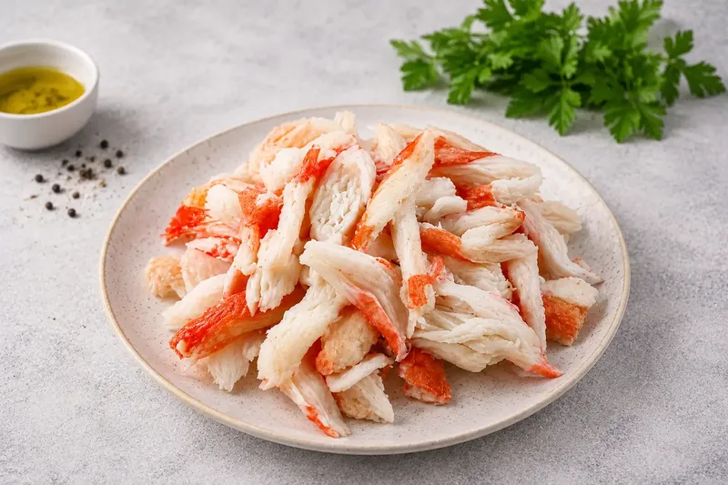

Крабы
Салатное мясо камчатского краба, варено-морож.
Цена и наличие
- 1 кг431,2 BYN / кгВ наличии
Данные на 23.11.2026.
Характеристики
- Вид разделки
- салатное мясо
- Тип продукта
- варено-мороженый
Описание
Салатное мясо камчатского краба — это изысканный деликатес, представляющий собой отборную смесь очищенных частей краба: фаланг, «розы», колена и кулака. Продукт отличается нежной, сочной текстурой и характерным сладковатым вкусом, за который ценится мясо камчатского краба.
ОСНОВНОЕ
Пищевая ценность на 100 г продукта белки – 18 г, жиры – 1 г, углеводы – 0 г Энергетическая ценность на 100 г продукта 90 ккал Тип продукта варено-мороженый Производитель Россия Условия и срок хранения хранить при температуре -10 — -20 градусов, не более 3 месяцев со дня производства
ДОПОЛНИТЕЛЬНО
Салатное мясо камчатского краба — это готовый деликатесный продукт премиального качества, представляющий собой тщательно отобранную смесь очищенных частей краба: фаланг, «розы», колена и кулака. Такой формат считается одним из самых удобных для кулинарного использования, так как сочетает разные текстуры и сохраняет насыщенный вкус краба. Продукт отличается нежной, сочной структурой и выразительным сладковатым вкусом натурального крабового мяса. Благодаря щадящей варке и последующей шоковой заморозке он сохраняет свою свежесть и питательные свойства. Мясо полностью готово к употреблению после разморозки и не требует дополнительной термической обработки. Идеально подходит для приготовления салатов, закусок, роллов, канапе и ресторанных блюд в домашних условиях.